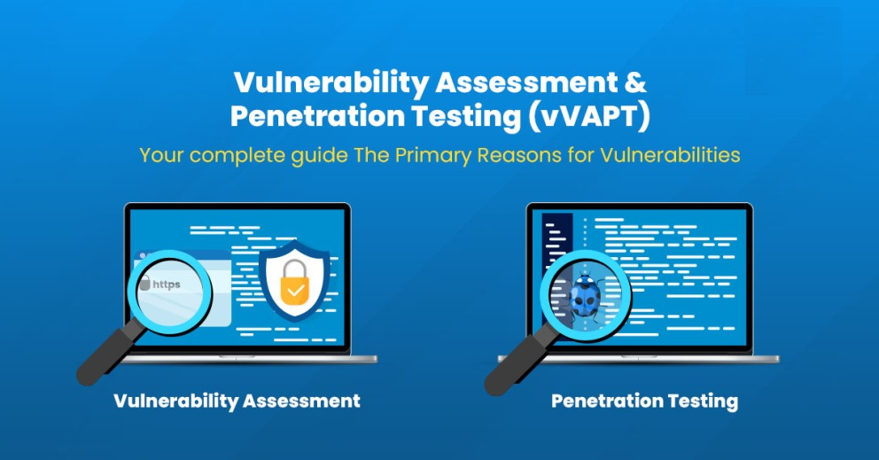

Services We Are Offering
Vulnerability Assessment
- Outdated Software and Systems
- Increase of Security Incidents
- Expanding Attack Surface
- Regulatory Compliance Requirement
- No Recent Security Audit

Web Application Security Testing
- Conduct thorough crawling and mapping of the application using tools like Burp Suite.
- Perform manual testing for OWASP Top 10 vulnerabilities including SQLI, XSS, and CSRF.
- Test for authentication bypass, session management flaws, and access control vulnerabilities.

Network Security Assessment
- Starting with comprehensive port scanning using Nmap and rust scan.
- Perform banner grabbing and service enumeration to identify software versions using netcat.
- Test for common network vulnerabilities using tools like Nessus and OpenVAS.
- Analyze network segmentation and firewall rule effectiveness, for example, bypassing firewall by changing DNS port.
- Check for misconfigurations in network protocols and services, for example, checking for anonymous FTP login.

Infrastructure Security Testing
- Assess server hardening and configuration against industry benchmarks.
- Review patch management status and system update policies.
- Test for default credentials and weak password policies.
- Ensure proper privileges and IAM best practices.
- Evaluate backup systems and disaster recovery configurations.

API Security Testing
- We document and analyze all API endpoints using tools like Postman. For example, finding open API endpoints like /api/users.
- We check for sensitive data exposure in API responses using tools like Postman and cURL.
- Validation of input and rate limiting mechanisms.
- We test APIs based on OWASP API Top 10 vulnerabilities.
- Vulnerabilities such as broken authentication, excessive data exposure, and improper rate limiting.

Compliance Audits
- GDPR, HIPAA, PCI DSS
- Conduct audits to verify compliance with key regulations, including the General Data Protection Regulation (GDPR), Health Insurance Portability and Accountability Act (HIPAA), and Payment Card Industry Data Security Standard (PCI DSS).